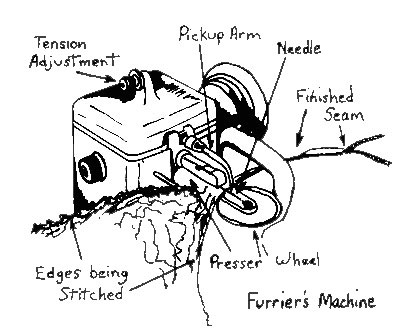
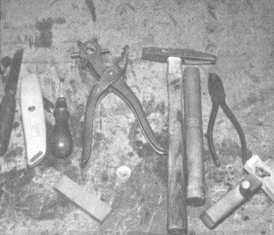
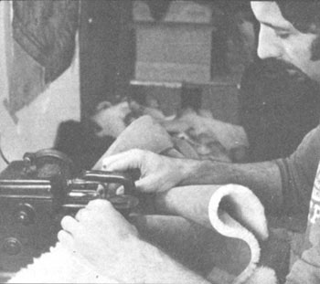
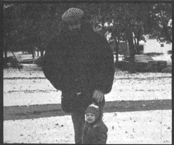
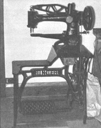
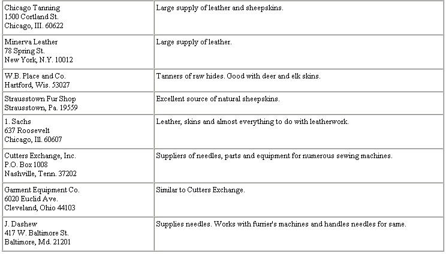

Sheepskins, interestingly enough, still come from sheep. Most of them, once they take leave of their original inhabitant, get dyed ugly colors-after first being bleached white-and then end up as doormats, teddy bear skins or bed rugs. A few go to head shops or exotic import places as novelties, where they can be purchased for the average price of $25.00. And a select handful actually become sheepskin coats which can be admired from a distance, but which are really just too expensive for the average person to buy.
Expensive or not, however, a sheepskin coat will probably sound like a pretty good idea to you when the snow begins to fly and the temperature drops and drops and drops. Well, before winter completely takes hold, you can-with a little patience, a few tools, not a great deal of money and even less skill-make a sheepskin coat that will be both luxuriously warm and your very own work of art.
You can find sheepskins for sale in most large cities, usually as part of a leather jobber's stock. If you live in the West, Southwest or parts of Canada, you may be close to a tannery... which is the ultimate source, outside of the sheep themselves. The skins can be mailed or shipped by UPS, so you don't necessarily have to make your purchases in person.
The hides come either bleached white, dyed-any variety of colors-or natural. The naturals, which are neither bleached nor dyed, are most exciting to me because of their varied shades and patterns. You can't expect a perfect match in naturals, but you do get beautiful skins that will allow you to produce highly individualistic creations.
You also have a choice of wool length. Fleece that's 1/4 to 1/2 inch long is called shearling and is the shortest length available. This is what you want if you're going to make coats with the wool on the inside. Next is a length of 5/8 inch, followed by 1 inch and sometimes 1-1/2 to 2 inches. These longer fleeces make impressive coats when you put the wool on the outside.
Sheepskins are sold by the foot or by the skin. The individual hides, on an average, are 7 to 8 feet long... with 6 feet being considered a small skin and 10 feet a large one. I presently pay $6.00 for shearlings and $10.00 to $12.00 for skins with longer fleece. (The cost of sheepskins, like everything else, has probably skyrocketed since this article was written. - MOTHER.) I also buy - from Chicago Tanning - shearlings that have their leather sides dyed a light brown. These cost $1.00 per foot. The advantage here is that you can make a coat from these without worrying about dying the hides yourself.
You can make most coats from four skins. It's even possible, with some piecing, to whip up a small jacket out of three hides... but I always allow four skins for all coats and then make rugs and blankets from the scraps.
The easiest sheepskin coat to make is one with the wool on the outside. The beauty of this method is that you don't have to worry about straight seams or patches because the fleece will cover everything. Also, you don't have to spend much time on coat style because the wool will obscure most of the garment's lines.
Start by selecting four hides and a pattern. Lay out the skins, wool side down, and trace the various sections of the garment onto the leather side of the sheepskins. Use a ballpoint pen or chalk, depending on the leather's color.
Next cut out and assemble the pieces you've marked, being careful to slice only through the leather and not to cut away any of the wool. If you're sewing the skins by hand or with a furrier's machine, you can butt the edges of the sections together and you won't need to allow for seams. You must leave enough extra material for seams, however, if you use a regular sewing machine.
Most patterns instruct you to sew the back of a coat to the front at the shoulders, then stitch up the side seams and, finally, put in the sleeves. Sheepskin is too bulky for this procedure. Instead, sew the back to the front at the shoulders and then put in the sleeves. Stitch up the side seams and the seam under the sleeve last of all.
If you're going to sew a coat by hand, either get a sewing awl which carries its own thread or, at least, an awl with which to punch holes. You'll regret attempting to push a needle through a sheepskin. Use heavy nylon or waxed cotton thread. The waxed cotton sticks to the wool and creates some problems, but it may be more readily available to you. You can even slick up your own thread with a cake of beeswax.
When I make coats with the wool on the outside, I put pockets on by slitting the front of each garment at the appropriate places and sewing a bag pocket to the inside of the slit.
You can use any number of methods for fastening the coat... zippers, clips, buttons or pegs and ties, to name a few. If possible I make a coat that is shirt style and doesn't overlap in front. That way, I can use a zipper to close the garment. It's easy to put a zipper on with the aid of a furrier's machine.
If you plan to make more than two or three coats, or if you want to put those long winter evenings to use in an income producing venture, I would recommend that you look for a furrier's machine. It's simpler to operate than a regular sewing machine and anybody should be able to master one.
This particular piece of equipment is not as easy to find as other sewing or stitching machines, but it is available if you look for it. One of the largest dealers of new furrier's machines in the U.S. is Bonis in New York City. However, I suggest that you look around used furniture stores and sewing machine shops before buying one of these stitchers new.
You can also check with shoe shop wholesalers and cleaners who are closing out their tailoring shops. I don't have any idea what a fair price for a used furrier's machine might be, but I would think it would be pretty low. I got mine free from a sewing machine dealer in Maryland. He had it in his backroom, didn't know anything about it and was glad to get it out of the warehouse. He asked only that I never bring it back to him for repair.
Furrier's machines are usually Type A (for lighter materials) or Type B (heavier materials) and occasionally Type T (very heavy materials). My machine is an Osann. I have no idea how old it is, but it works like a dream.It is a Type A, yet it will sew the heaviest of sheepskins (although at times it doth protest a bit). You need to know what type of machine you have in order to buy needles, and you'll probably find a letter on top of the needle carrier which will tell you. Needles are designated by numbers, with the larger numbers being the smaller needles. I use a size 10.
I should warn you that the furrier's machine-like most mechanical stitching equipment-will pull the material which is in contact with the presser wheel through faster than the other piece of material wants to advance. If you remember to place more tension on the piece that is in contact with the presser wheel, however, you'll be all right. I recommend that you experiment by sewing together pieces of scrap sheepskin that are of equal length until you're able to get them to "come out even".
When I make coats where the wool will be on the inside, I start the same way as before... with four skins (shearlings) and a pattern. You have to remember, of course, to make the coat larger than if the wool was on the outside or if you were using cloth. I use a ratio of 6 to 7. That is, if the pattern calls for a 42-inch chest, I allow 49 inches. And be warned in advance that the fleece makes the sleeves especially tight: You'll have to cut them out considerably larger than you would for an ordinary coat. All this varying of measurements will depend on the particular skins and wool length with which you're working, as you can imagine, so you'll have to do some experimenting to get your garment to fit just right.
I sew my adjusted sections of coat together on the furrier's machine. Then I cut one-inch strips of leather that are the same color as the leather of the sheepskins, glue them over the seams and sew them down with a Singer (Model 29-4) shoe patch machine.
You can also use a regular heavy duty sewing machine to make a sheepskin coat with the wool on the inside. Allow for seams when you cut out the sections of material, trim the wool off the edges with a pair of scissors and then stitch the pieces together as if they were cloth. You might also want to sew strips over the seams for more strength.
There are several ways to finish a coat. You can leave the edges raw... or allow some extra skin, fold the edges to the outside and glue them (giving the garment a fur-trimmed look). You can also nip away a one-inch-wide border of fleece from around each section of the coat… then fold the edges in and stitch them to give the garment a finished leather edging. In any case, you'll have teh equivalent of a $200 coat when you're finished.
When I put together a "wool in" garment, I cut out pieces of skin for patch pockets, trim the fleece forming a groove on the inside of the coat where the seam will be, glue the pocket in place and stitch it down. Some of these coats get closed with snaps (simple and quick) or, if they're of a wraparound style, buttons or ties and belts.
If you buy natural skins for a "fleece inside" coat, you may want to dye the leather (outer) sides of the hides. Most dyes are for finished leathers and will penetrate the sheepskin more than is desirable, so you have to look for dyes that won't seep into the wool. If you can only find penetrating dyes, wet (with a water-soaked sponge) the area of the skin that you plan to tint. Then, while the skin is still damp, apply the dye with another sponge or dye applicator (I use a piece of sheepskin that has the wool clipped very short). The water in the leather will stop the dye's penetration.
Since you've made your genuine sheepskin coat yourself, there won't be a label inside giving you instructions on how to care for and clean the garment. That's no problem... you just care for and clean it as you would any other sheepskin coat.
Dry cleaning is probably best, but some hides can be washed in cool water with Woolite and dried in the air. However, this depends on the skins and the tanning process used on them. Some hides will shrivel and crack as they dry and the only way to test each skin is by washing a piece of it. If you're lucky and your hides are washable, I recommend treating the leather with neat's-foot oil after cleaning, but while the leather is still damp.
I'm sure, once you get into this, you'll have many questions own common sense… or consult the best seamstress in your neighborhood. In the meantime, here are some sources you may find useful if you'd like to try to make sheepskin coats for yourself or as a business venture:
|
 |
 |
 |
|
 |
 |
 |